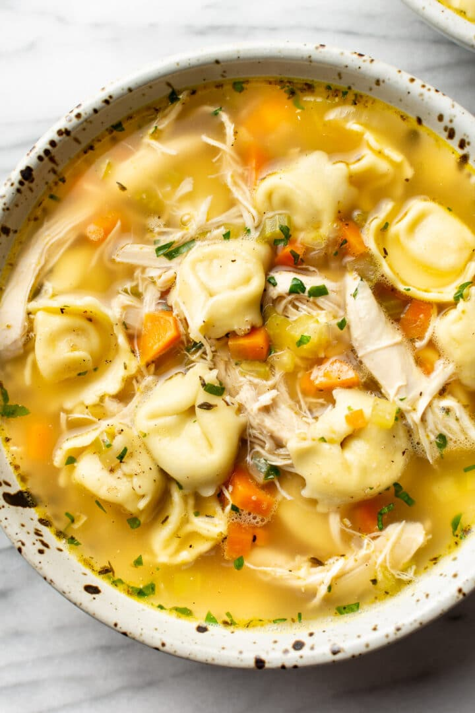

Chicken Tortellini Soup

Description
This hearty soup will warm you up and keep you full as the nights get cooler.
Ingredients
- 1 tablespoon olive oil
- 1/2 medium onion, chopped
- 3 sticks celery, chopped
- 3 large carrot, chopped
- 2 cloves garlic, minced
- 1/2 teaspon Italian seasoning
- 8 cups chicken broth
- 2 cups shredded rotisserie chicken
- 2 (9 ounce) packages of refrigerated cheese tortellini
- Salt & pepper, to taste
- Chopped parsely, to taste
Instructions
- Add the olive oil and onion to a large soup pot. Saute over medium-high heat for 5-7 minutes, or until onion is lightly browned.
- Add celery, carrots, garlic, and Italian seasoning. Give it a good stir and continue cooking for a few more minutes
- Add the chicken broth to the pot. Increase the heat to high, and once it starts to boil, reduce heat to a rapid simmer and let cook for
10 minutes or until the veggies are soft.
- Add the chicken and tortellini to the pot. Increase the heat to medium-high and cook until the tortellini are done. Reduce heat if soup boils furiously.
- Season with salt and pepper and garnish with chopped parsley. Serve immediately.